Farmors Food — UX & Storytelling
A real-life project focused on improving the digital presence, visual identity and user experience for Farmors Food.

The target group consists of quality-conscious consumers aged 30+ who value transparency, local products and high-quality food. They are willing to pay more for products they trust and feel confident serving to their families.
The project focuses on combining digital storytelling, UX principles and a warm visual identity to create a trustworthy and engaging user experience that reflects the company's values of quality, craftsmanship and authenticity.
A KWHL analysis was used to identify existing knowledge, key questions and areas that required further research.
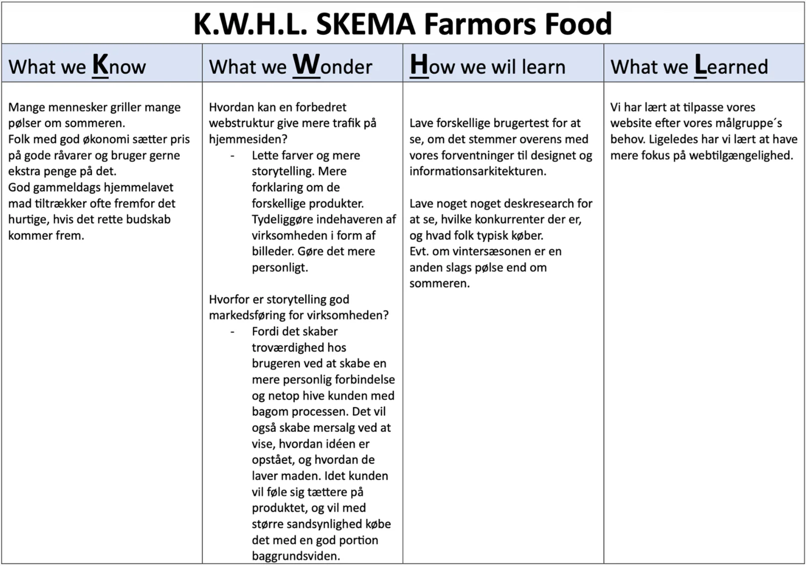
Different moodboards were created to explore various visual directions and to find a style that best reflects Farmors Food's brand and values.
The process included experimenting with colors, imagery and typography to capture a warm, authentic and handcrafted feeling.
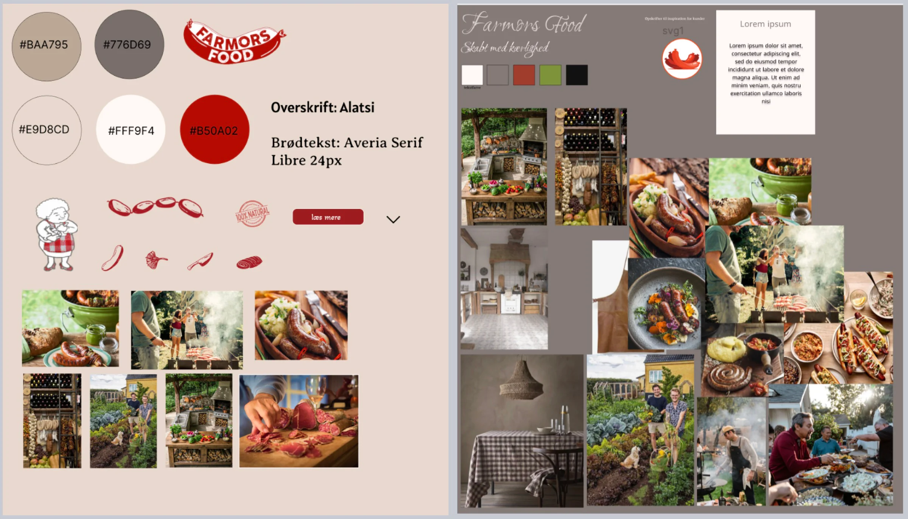
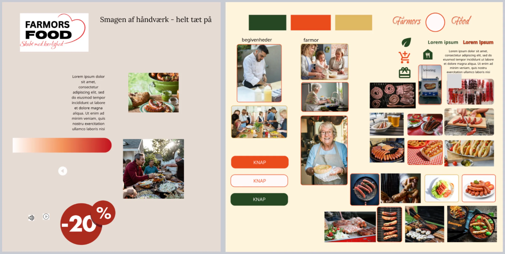
The first moodboard, which was chosen for the project, focuses on warm tones, natural materials and visual storytelling, creating a more inviting and emotional user experience.
Initial sketches were created to explore layout, structure and user flow. The focus was on developing a clear and intuitive navigation that improves the overall user experience.
Different layout solutions were tested to find the most effective way to present content and guide the user through the platform.
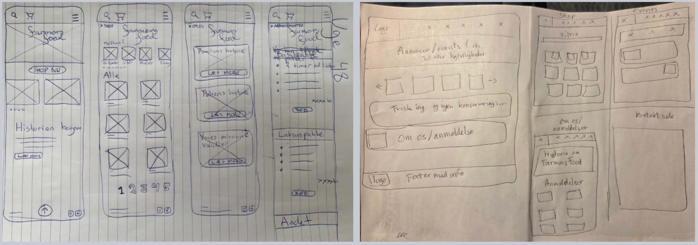
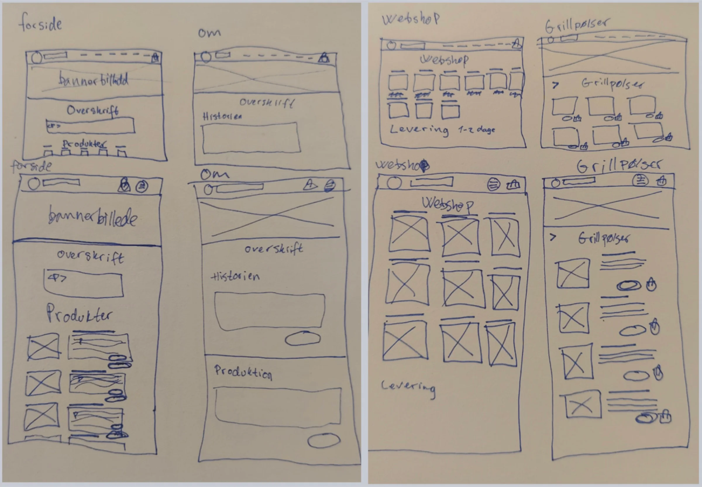
Two different prototypes were developed and tested to explore variations in colour and layout, helping to identify the most effective design solution.
The version on the right was selected for its clearer structure and stronger visual identity, as well as the client's preference to retain the original logo.
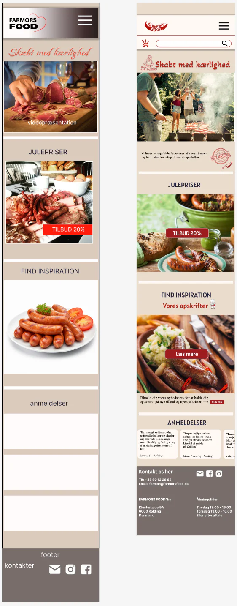
The Gangster Test and Desirability Test were used to evaluate the prototype and identify potential improvements to both the UX and UI.
Final mobile and desktop prototypes were developed to ensure a consistent and user-friendly experience across devices.
Mobile version prototype
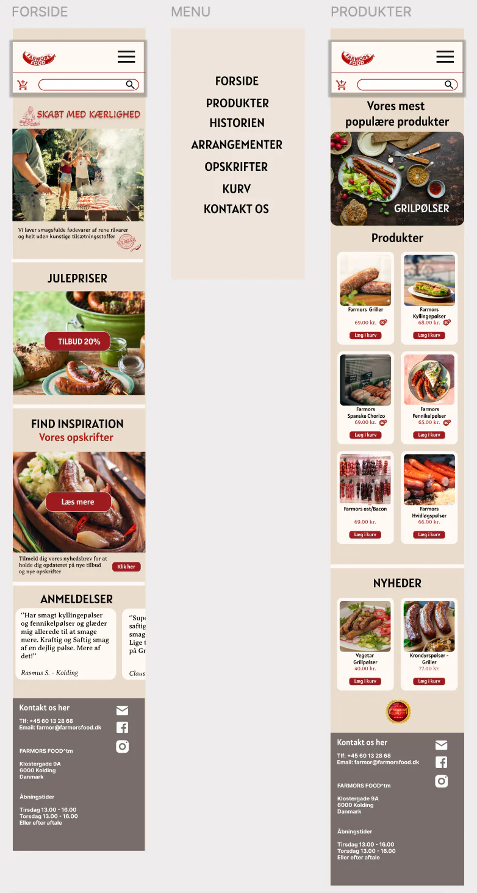
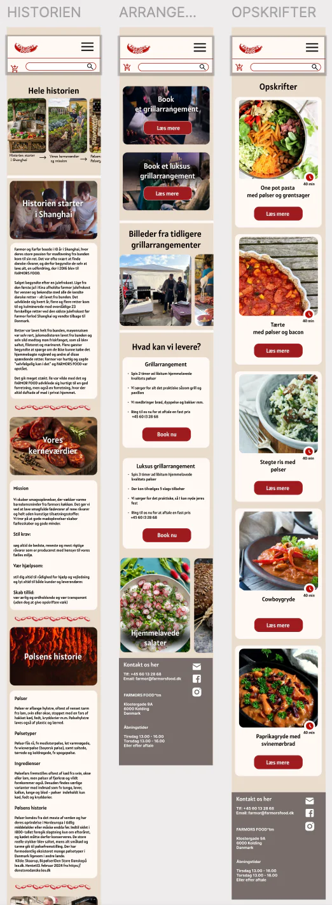
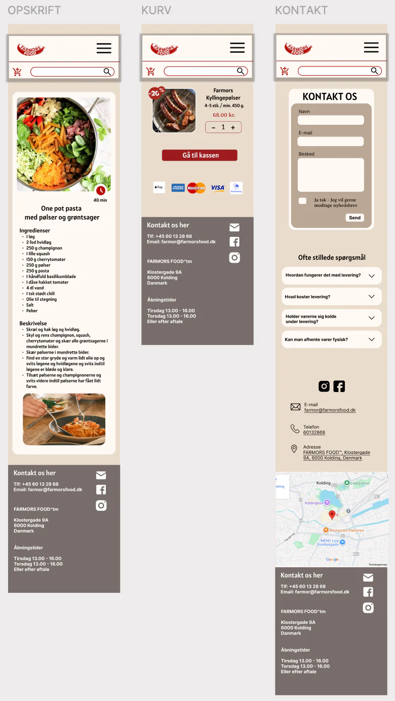
Desktop version prototype
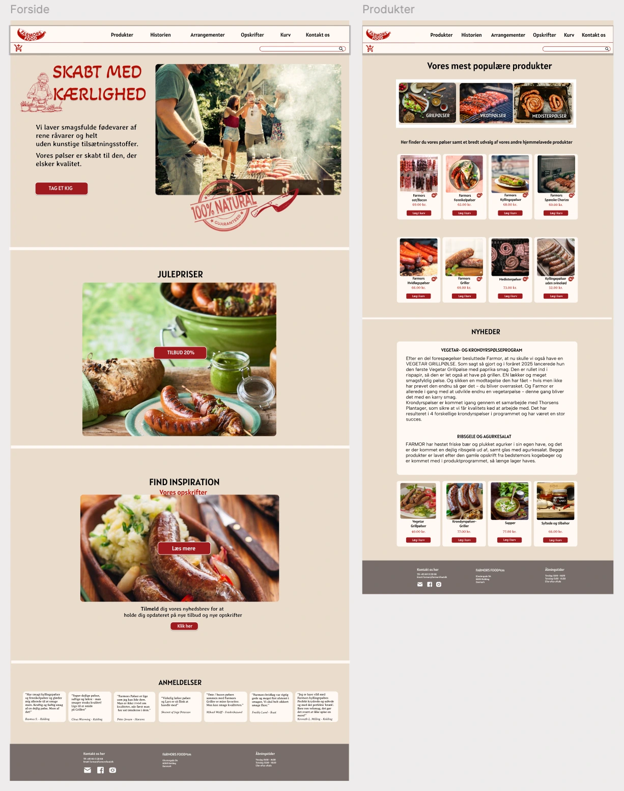
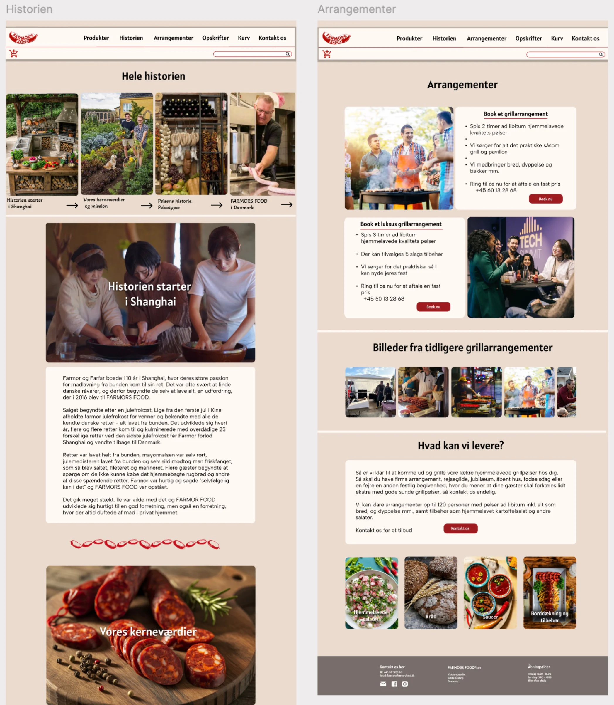
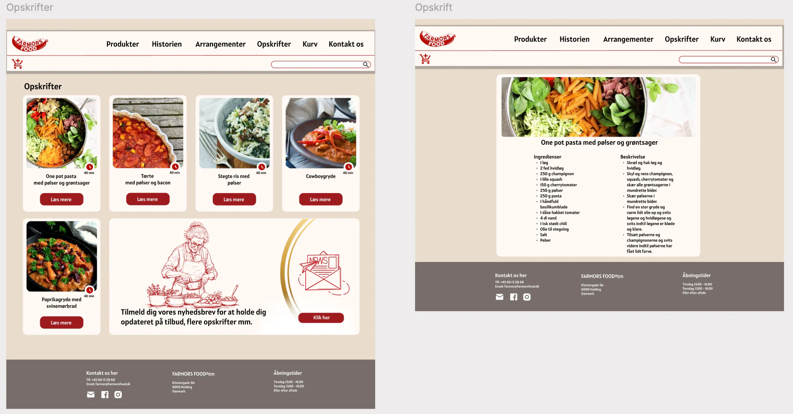
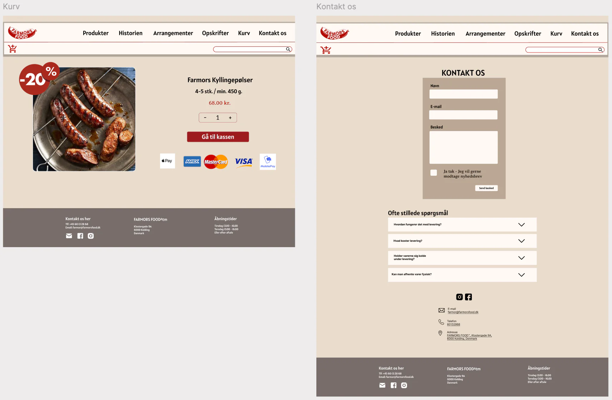
Overall, the project results in a cohesive and user-friendly solution that strengthens the brand identity and creates a more engaging and trustworthy digital experience.
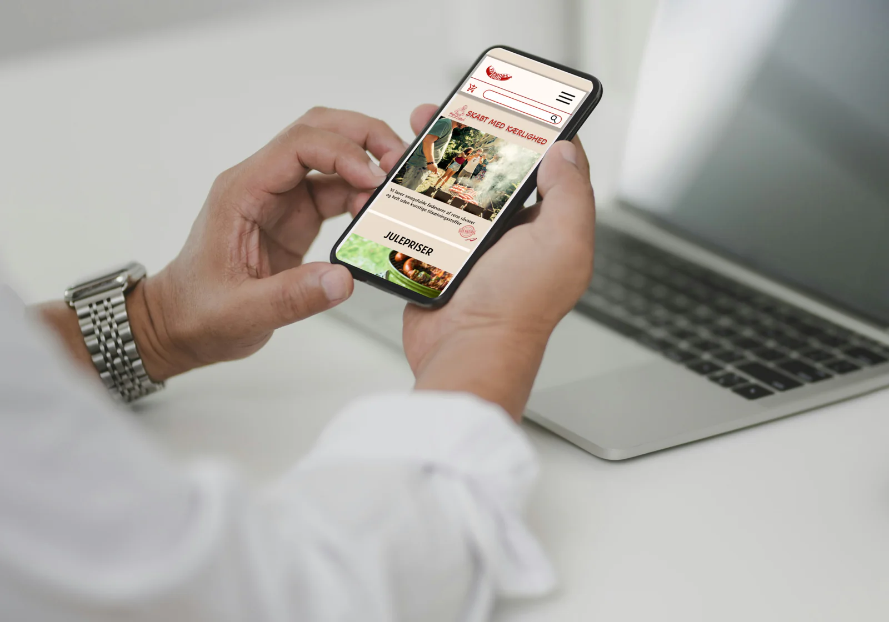
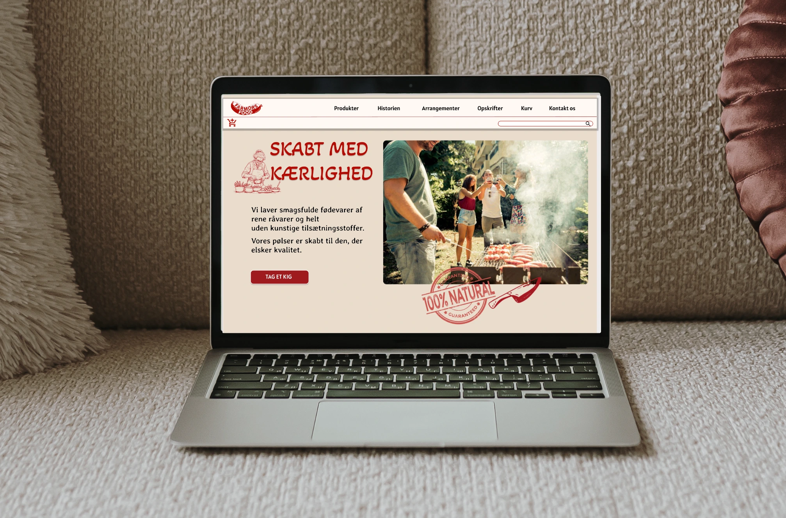
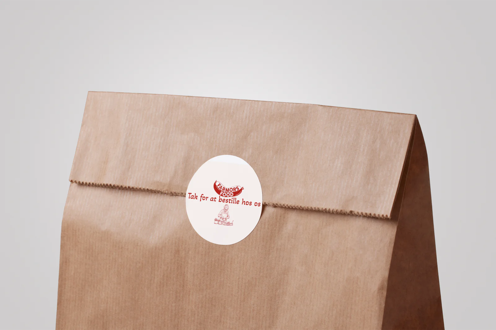